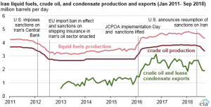
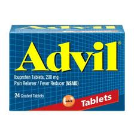

U.S. Calls for Extension of Sanctions Against Iran
US Secretary of State Mike Pompeo, addressing representatives of countries participating in a virtual session of the UN Security Council, said that countries from Israel to the Arab states of the Persian Gulf, all 'unanimously' want to extend and expand Iran’s arms embargo.
'Renewing the embargo will exert more pressure on Tehran to start to behave like a normal nation,' Secretary Pompeo told a UN Security Council meeting on Tuesday.'The world needs this to happen.The long-suffering Iranian people need it to happen.'He added, 'the council has a responsibility to make their voices heard.'
The United States has called for an extension of Iran’s arms embargo, which expires on October 18.The sanctions were imposed in 2010 in response to Iran’s secrecy over its nuclear program.Concerned about the nature of Iran’s nuclear program, the Security Council imposed sanctions on any arms trade with Iran.
Following the agreement between Iran and the world powers on the country’s nuclear program, Resolution 22331 passed, which stipulates that Iran’s arms embargo must end no later than five years after the adoption by the UN Security Council.However, the US government, which withdrew unilaterally in 2018, stressed that the Islamic Republic’s arms embargo should not be lifted.
'The [Iran nuclear pact], which is the result of compromise, can of course be seen as an instrument that can be improved,' France’s U.N. ambassador, Nicolas de Rivière, told the council.'There is as yet no serious alternative to prevent Iran from acquiring nuclear weapons, and its disappearance would improve neither the regional situation nor the security of our populations.'
Prior to the Security Council meeting on Iran, the country was preparing a draft resolution approving a new arms deal with Iran.China and Russia— major arms dealers in the Middle East— are opposed to extending Iran’s arms embargo.The two countries are permanent members of the Security Council and have veto power.
'The Iranian government is not a responsible democracy like Australia or India,' the Secretary of State told a Security Council meeting.He referred to the latest report by UN Secretary-General Antonio Guterres on the attack on Saudi oil facilities.The cruise missiles used to attack oil facilities and the Saudi international airport last year were 'of Iranian origin,' the report said.
Criticizing the US position, the Chinese envoy to the Security Council called on the country to 'end unilateral sanctions on Iran and return to the UN Security Council.'He stressed that China opposes the extension of Iran’s arms embargo and that the United States can no longer influence it because it has withdrawn from the agreement.
Washington has threatened to call for the return of all sanctions previously imposed on Iran’s nuclear program if it fails to renew Iran’s arms embargo.The sanctions were lifted after JCPOA.The United States withdrew from the Iran Nuclear Deal in May 2018.In response to the unilateral withdrawal of the United States from the agreement, Iran reduced its commitments to the UN Security Council in several stages.
Britain, France, and Germany— the three European signatories to the JCPOA— have said they will not support the United States’ call for the return of all UN sanctions against Iran.At the same time, however, the three countries believe that the lifting of the Iranian arms embargo 'will have important implications for regional stability and security.'
Britain, France, and Germany have decided to mediate a mutually acceptable agreement between the United States, Russia, and China.'Like the United States, we are concerned about the expiration of Iran’s arms embargo, but (without this embargo), the transfer of weapons to Iran under other resolutions will continue to be prohibited,' the German envoy to the Security Council said in a statement.
Referring to the Iranian Foreign Minister’s presence at the Security Council’s virtual meeting, the German envoy called the human rights situation in Iran 'awful,' and said, 'Iran not only does not recognize Israel but also builds missiles with the slogan ‘Death to Israel’ written on it.'
He stressed the importance of diplomacy and called on all parties to the nuclear deal to return to the agreement and commit to implementing it.
[bsa_pro_ad_space id=4]
Share on Facebook Tweet Follow us
Posted On: 2020-07-01T00:00:00
Posted By: Benedict Kasigara





Content Date: 2020-07-01
Download Date: 2021-07-09
Document ID: L0C04EPAH